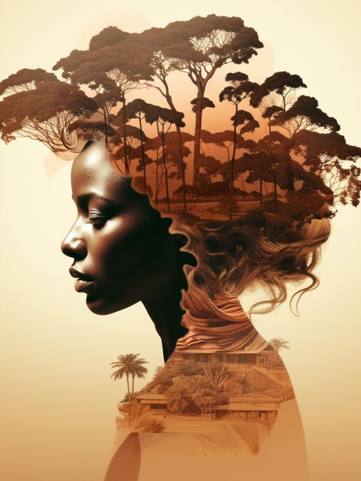
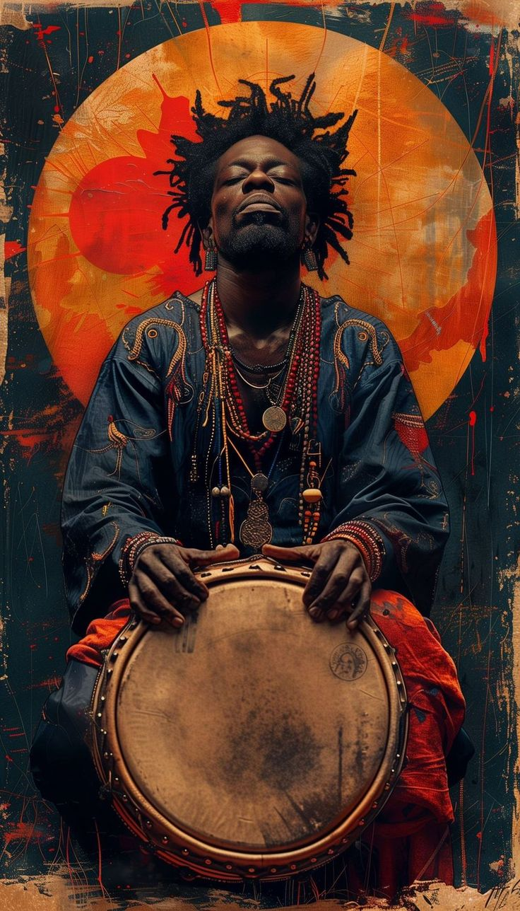

The Moisaic Woman-a tapestry of African beauty
In a world where art speaks louder than words, this mosaic painting of
an African woman is a masterpiece that celebrates the beauty,
strength, and diversity of African culture. Each piece of the mosaic,
carefully placed and intricately designed, represents a fragment of
her story – a story of resilience, grace, and pride. The woman in the
painting is more than just a subject; she is a symbol of the African
spirit. Her eyes, filled with wisdom and determination, seem to gaze
into the soul of the viewer, inviting them to explore the rich
tapestry of African heritage. The mosaic technique, with its
fragmented yet harmonious design, mirrors the diversity of Africa
itself – a continent made up of countless cultures, languages, and
traditions, yet united by a shared history and identity. As you admire
this artwork, let it remind you of the beauty that lies in diversity
and the strength that comes from unity. This mosaic woman is not just
a painting; she is a celebration of Africa in all its glory.
In the heart of East Africa, where the savannah stretches endlessly
and the sun paints the sky in hues of orange and gold, the Maasai
warrior stands tall. Clad in vibrant shukas (traditional robes) and
adorned with intricate beadwork, he is more than just a man – he is a
symbol of resilience, tradition, and the unyielding spirit of the
Maasai people. The Maasai are known for their deep connection to the
land and their unwavering commitment to preserving their culture. This
painting captures the essence of a Maasai warrior, his gaze steady and
his posture commanding. The sunset behind him is not just a backdrop;
it represents the timeless beauty of Africa and the enduring legacy of
its people. As you admire this artwork, let it remind you of the
strength and pride that define the Maasai culture – a culture that has
stood the test of time and continues to inspire the world

The Map of Africa – A Crown of Heritage
This striking painting of an African woman with the map of Africa
emerging from her head is a powerful representation of identity,
heritage, and the unbreakable bond between the people and the land.
The woman, with her regal posture and serene expression, wears the map
like a crown – a symbol of pride and connection to her roots. The map
of Africa, intricately woven into her hair, is not just a geographical
representation; it is a testament to the rich history, culture, and
resilience of the African people. Each line and curve of the map tells
a story of triumph, struggle, and hope. It is a reminder that Africa
is not just a continent; it is a home, a legacy, and a source of
inspiration. As you reflect on this artwork, let it inspire you to
embrace your own heritage and celebrate the beauty of your roots. This
woman is not just a figure in a painting; she is a symbol of Africa’s
enduring spirit.

The Rhythm of the Drum – A Heartbeat of Africa
In the heart of an African village, the sound of the drum echoes
through the air, calling people together and setting the rhythm of
life. This painting of an African man drumming captures the essence of
that rhythm – a rhythm that is the heartbeat of Africa. The man, with
his strong hands and focused expression, is more than just a musician;
he is a storyteller, a healer, and a keeper of tradition. The drum,
with its deep, resonant sound, is a symbol of unity and connection. It
is used to celebrate, to mourn, to communicate, and to bring people
together. As you listen to the silent rhythm of this painting, let it
transport you to a place where music is not just sound but a way of
life. This drumming man is not just an artist; he is a guardian of
culture and a reminder of the power of music to unite and inspire.